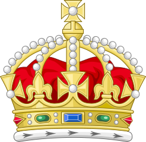

<mat-toolbar class="navbar">
  <div class="navbar-content">
    <button mat-icon-button>
      
    </button>
  </div>
  <span class="spacer"></span>
  <span class="navbar-content_brand">maiordomus</span>
</mat-toolbar>
